다섯 줄, 택시 데이터, 그리고 텐서
영상은 PyTorch 훈련 코드라면 어디에나 들어 있는 다섯 줄로 시작해요. 화면 왼쪽 번호 1~5가 각각 예측, 손실 재기, 기울기 구하기, 가중치 업데이트, 기울기 비우기예요. 영상이 끝까지 던지는 질문은 세 가지예요. backward()는 정확히 무엇을 계산하는지, step()은 무엇을 바꾸는지, 왜 굳이 무언가를 비워야 하는지예요.
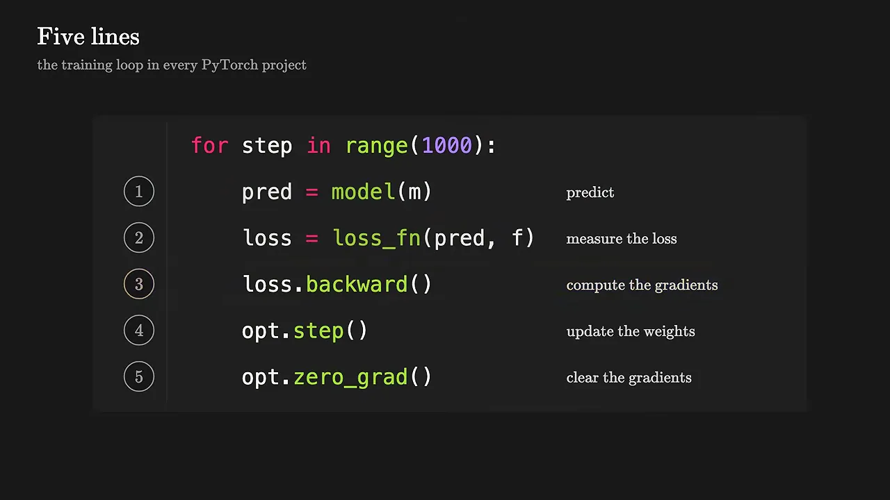
바로 이어서 결과부터 보여 줘요. 왼쪽 위 작은 표가 요금 36개이고, 가운데 그래프의 초록 점이 승차 한 건씩이에요. 파란 직선이 스텝마다 점들 쪽으로 올라가고, 오른쪽 아래 계기판 두 개가 지금의 w와 b 값이에요. 이 화면은 71번째 스텝이라 손실이 13.34까지 내려와 있어요.
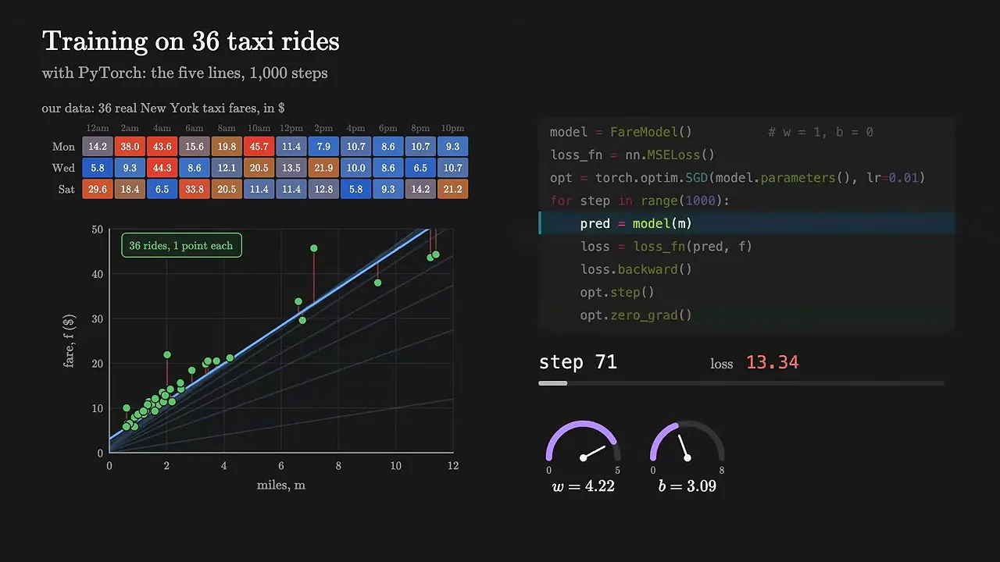
데이터: 뉴욕 택시 36건
데이터는 뉴욕시가 공개하는 노란 택시 운행 기록에서 왔어요. 2024년 1월 8일(월), 10일(수), 13일(토) 사흘 동안 2시간 칸마다 첫 번째 평범한 승차를 하나씩 골라서 3 × 12 = 36건이에요. 화면 위쪽 표에서 노란 테두리로 강조된 줄이 이 영상의 대표 승차예요. 월요일 정오에 1.38마일을 가고 11.40달러가 찍혔어요.
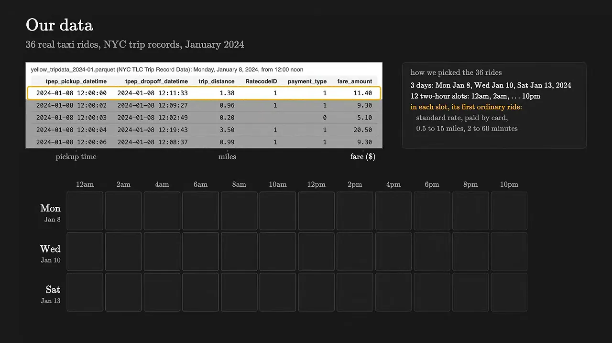
텐서는 모양이 있는 숫자 격자예요
요금을 담는 그릇이 텐서예요. 코드는 요일 이름 리스트와 함께 하루당 한 줄씩 리스트를 torch.tensor에 넘겨요. print(fares.shape)는 torch.Size([3, 12])를 찍어요. 오른쪽 큰 글씨 (3, 12)에서 3은 날짜, 12는 시간 칸이에요.
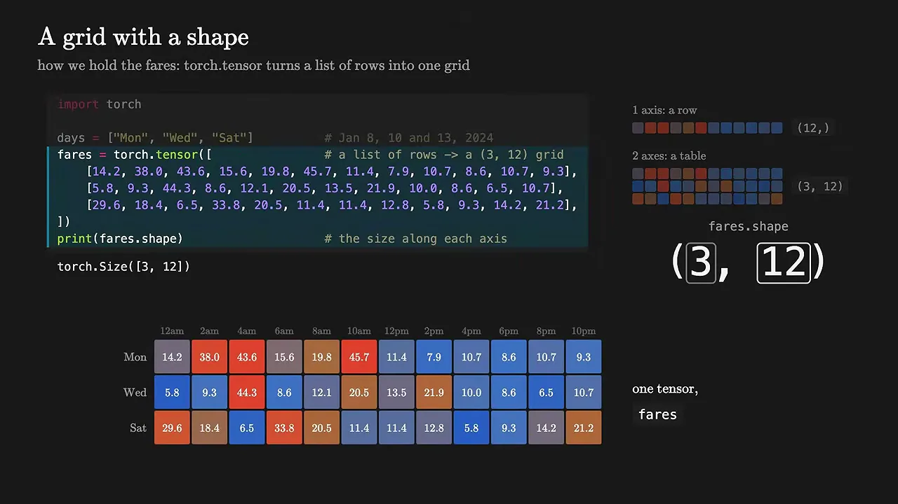
격자의 방향 하나하나를 축, 또는 차원(dim)이라고 불러요. PyTorch는 0부터 세요. dim 0은 위에서 아래로 날짜 셋을, dim 1은 왼쪽에서 오른쪽으로 2시간 칸 열둘을 따라가요. shape은 축마다의 크기예요.
데이터가 아직 없을 때는 모양만 정해서 만들어요. 아래 화면 위쪽 여섯 칸이 '모양으로 만들기', 아래 한 칸이 '범위로 만들기'예요. zeros(2, 3)의 2와 3이 모양이에요. dim 0으로 2, 그러니 두 줄이고, dim 1로 3, 그러니 세 칸이에요. full은 모양을 튜플 하나로 받고 그다음 채울 값을 받아요. eye(3)은 대각선만 1인 3 × 3이에요.
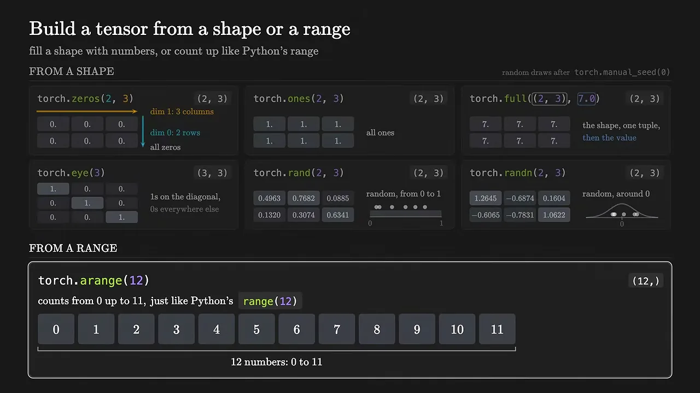
rand는 0과 1 사이, randn은 0 근처 종 모양 난수예요. arange(12)의 12는 빠져요. 파이썬 range(12)와 같아요.
영상 03:12에서 보기
텐서 연산: 고르기, 합치기, 바꾸기
요금 표로 할 수 있는 일을 영상은 한 장에 열두 개 모아 보여 줘요. 왼쪽 열이 고르기(pick), 가운데가 합쳐 새 숫자 만들기(combine), 오른쪽이 같은 숫자로 모양만 바꾸기(rearrange)예요. 지금 다 읽을 필요는 없고 하나씩 짚는다고 해요.
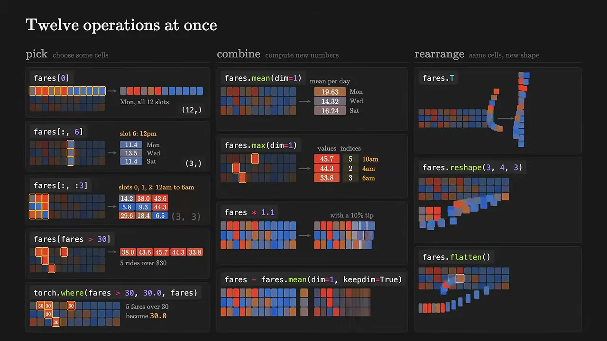
인덱스로 고르기
파이썬 리스트처럼 인덱스로 골라요. fares[0]은 0번 줄, 월요일 요금 열두 개예요. 정수로 고르면 그 축이 사라져서 모양이 (12,)가 돼요. 대괄호 안의 쉼표는 축을 나눠요. 앞이 dim 0, 뒤가 dim 1이고, 콜론 하나는 '그 축 전부'예요. 아래 화면의 노란 세로 칸이 fares[:, 6], 모든 날의 6번 칸이에요. 칸은 자정부터 2시간씩이니 6번이 정오예요.
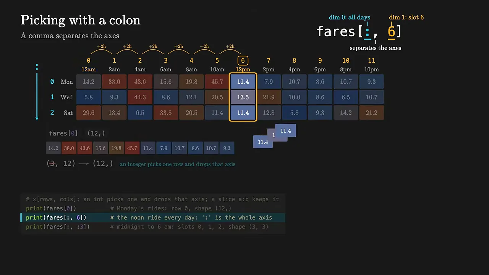
fares[:, :3]는 축을 남겨서 (3, 3)이 돼요. 정수 하나는 축을 지우고, 범위는 축을 남겨요.
영상 04:20에서 보기
조건으로 고르기
fares > 30은 fares와 같은 모양의 참·거짓 격자를 만들어요. 이런 격자를 불리언 마스크라고 하고, 영상은 pricey라고 불러요. 화면 위쪽 T/F 격자에서 노란 T 다섯 칸이 30달러 넘는 승차예요. 이걸로 인덱싱하면 그 다섯 개만 뽑히고, torch.where(pricey, 30.0, fares)는 T 칸만 30으로 바꾸고 나머지는 원래 요금을 둬요.
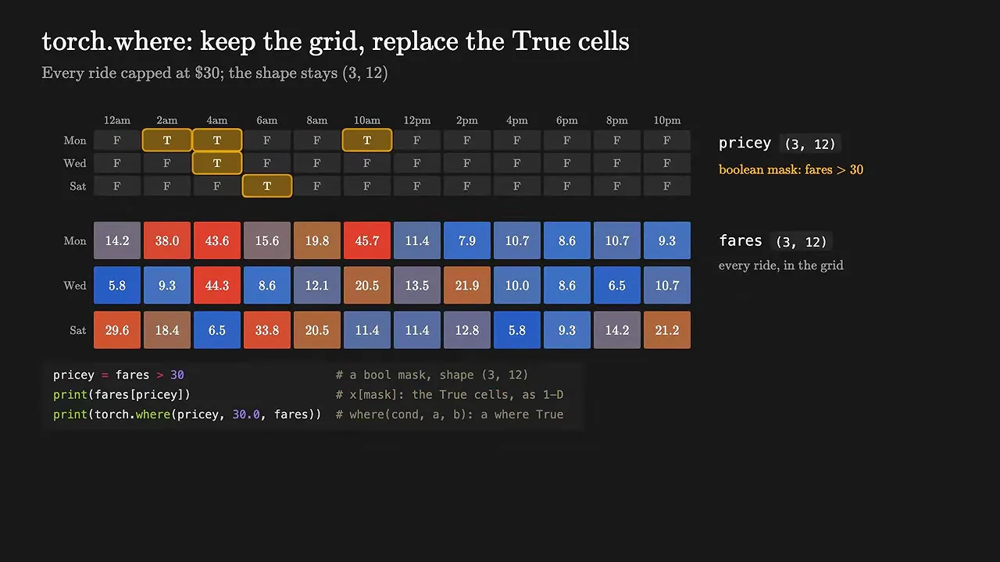
torch.where는 모양을 그대로 둬요. 결과는 여전히 (3, 12)예요.
영상 05:00에서 보기
dim은 '없어지는 축'이에요
하루 평균을 구하려고 영상은 일부러 fares.mean(dim=0)부터 시도해요. 날짜가 dim 0이니까 맞을 것 같지만, 결과는 셋이 아니라 열두 개예요. 화면 아래 빨간 X 옆 줄이 그 결과, 시간 칸마다 평균 하나씩이에요.
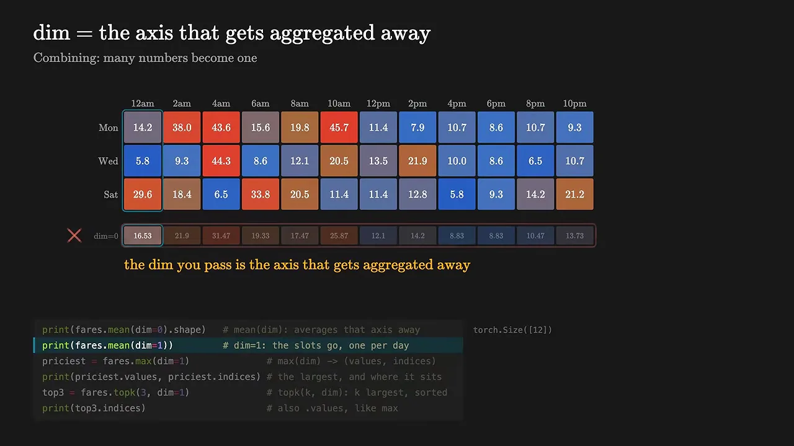
dim=0은 날짜를 지우고 시간 칸을 남겨요.
영상 05:45에서 보기
시간 칸을 없애야 하니 dim=1을 넘겨요. 이번에는 오른쪽 mean 열에 숫자 세 개가 생겨요. 월요일 19.63달러, 수요일 14.32달러, 토요일 16.24달러예요. 화면 아래 계산식처럼 월요일 열두 칸을 더해 12로 나눈 값이에요.
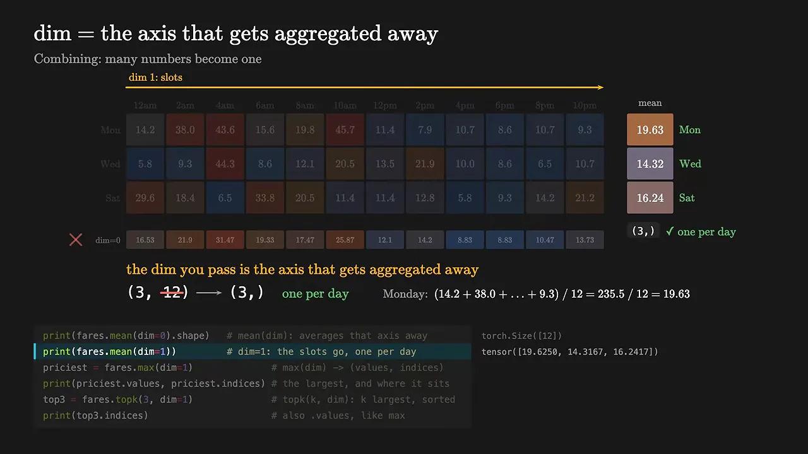
(3, 12) → (3,), 하루에 하나씩이에요.
영상 06:05에서 보기
max도 dim=1을 받지만 텐서 두 개를 돌려줘요. 가장 비싼 요금(values)과 그 칸 번호(indices)예요. 화면에서 빨갛게 테두리 친 세 칸이 하루의 최고가예요. 월요일은 오전 10시 45.70달러, 수요일은 새벽 4시 44.30달러, 토요일은 아침 6시 33.80달러예요.
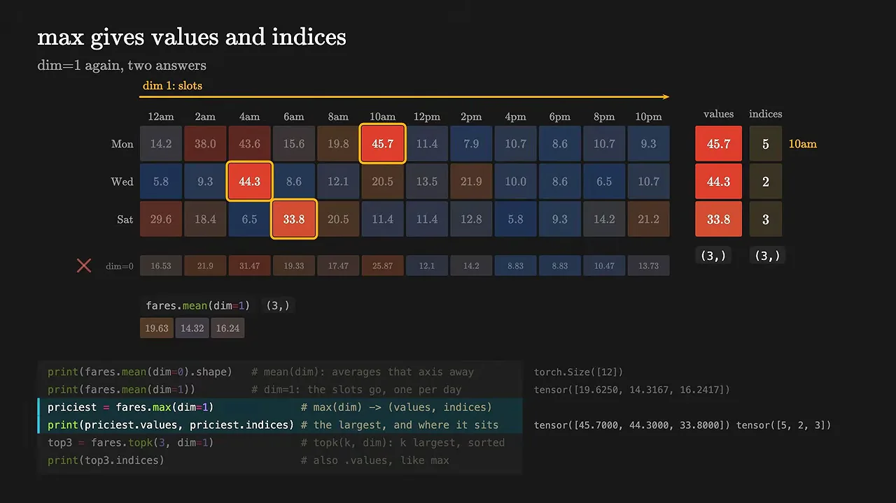
topk(3, dim=1)은 큰 것 세 개를 순서대로 줘요. 이때 dim 1은 사라지지 않고 12에서 3으로 줄어요.
영상 06:20에서 보기
여기서 첫 번째 퀴즈가 나와요. fares.max(dim=0).values의 모양은 무엇일까요? 답은 (12,)예요. 날짜 축이 사라지고 시간 칸마다 최고가 하나가 남아요. dim을 주지 않은 fares.max()만 숫자 하나를 줘요.
모양만 바꾸기
세 번째 갈래는 숫자는 그대로 두고 모양만 바꿔요. 화면 왼쪽 세로 표가 fares.T, 시간 칸 열둘이 줄이 되고 날짜가 열이 된 (12, 3)이에요. 가운데 fares.reshape(3, 4, 3)은 하루를 밤·아침·오후·저녁 네 구간으로 나눠요. 여기에 .mean(dim=2)를 하면 구간 평균이 남아요. 월요일 밤 승차는 평균 약 32달러였고, 저녁은 10달러가 안 됐어요. 화면 가운데 맨 윗줄의 night 세 칸(14.2, 38.0, 43.6)과 evening 세 칸(8.6, 10.7, 9.3)을 보면 왜 그런지 바로 보여요.
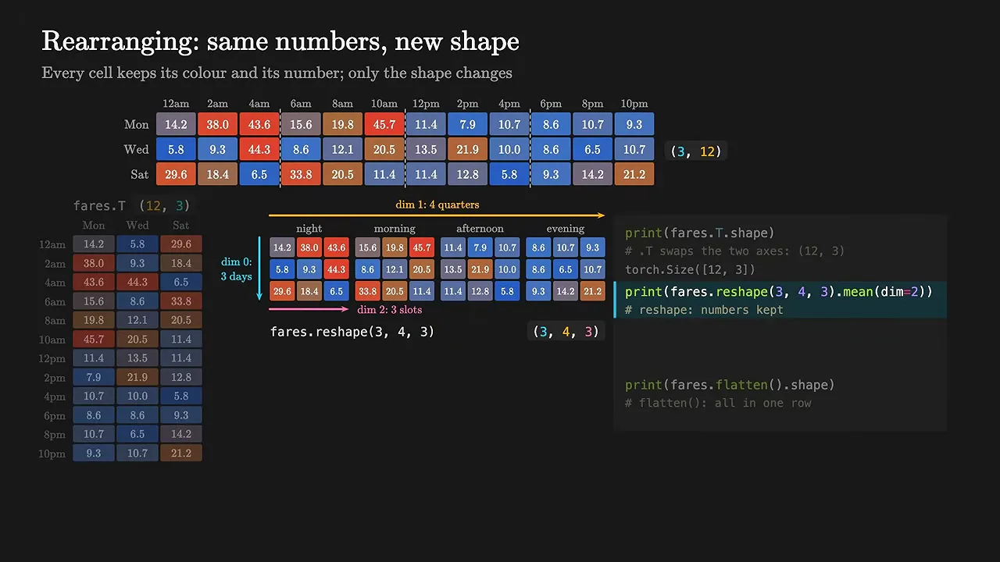
flatten()은 반대로 36개를 한 줄로 펴요. 월요일, 수요일, 토요일 순서예요. 바로 다음 섹션에서 마일과 요금을 짝지을 때 이걸 써요.
마지막으로 실무 코드에서 자주 보는 연산을 (2, 3) 격자 하나로 모아 보여 줘요. 노란 테두리 칸이 지금 설명 중인 연산이에요.
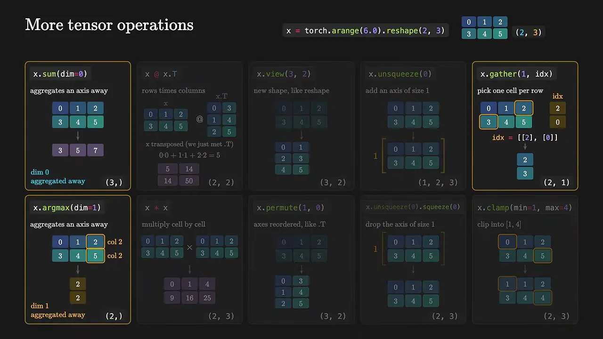
sum과 argmax도 mean, max처럼 축 하나를 지워요. 각 칸 오른쪽 아래가 결과 모양이에요.
영상 09:14에서 보기
나머지도 한 줄씩 정리할게요. x @ x.T는 행렬곱이라 행과 열을 곱해 더해요. 화면의 0·0 + 1·1 + 2·2 = 5가 그 한 칸이에요. x * x는 칸끼리 곱해요. view는 reshape처럼 모양을, permute는 .T처럼 축 순서를 바꿔요. unsqueeze와 squeeze는 크기 1인 축을 넣고 빼요. gather는 줄마다 인덱스로 한 칸씩 고르고, clamp는 모든 숫자를 범위 안으로 잘라요.
예측하고 얼마나 틀렸는지 재기
모델은 먼저 추측하면서 배워요. 그래서 세 번째 정류장은 예측이에요. 승차 기록에는 간 거리도 있으니, 요금과 같은 모양의 마일 표를 하나 더 만들어요. 둘 다 flatten하면 '마일이 들어가고 요금이 나오는' 36쌍이 돼요. 영상은 이걸 m과 f라고 불러요. torch.stack([m, f], dim=1)은 둘을 새 축으로 나란히 세워 (36, 2) 표를 만들고, torch.cat은 끝에 이어 붙여 72개짜리 한 줄을 만들어요.
정답이 이미 있는 실험
뉴욕 택시에는 공식 요금표가 있어요. 화면 위 파란 상자가 그 요금표예요. 노랗게 강조된 두 줄이 기본 3.00달러, 그리고 1/5마일마다 70센트예요. 1마일은 1/5마일 다섯 개니까 마일당 3.50달러예요. 규칙을 이미 알고 있으니, 모델이 36건만 보고 이 규칙을 찾는지 확인할 수 있어요.
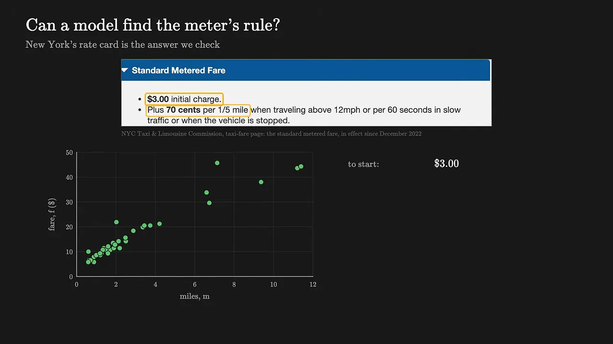
숫자 두 개짜리 직선
모델은 가장 단순한 직선이에요. 화면의 식 F̂ = w·m + b에서 w는 가중치, 마일당 가격이라 직선의 기울기를 정해요. b는 편향, 기본요금이라 직선을 위로 들어 올려요. 모델이 배우는 숫자를 통틀어 가중치라고 부르고, PyTorch에서는 파라미터라고 해요. 이런 직선 모델을 선형 회귀라고 해요.
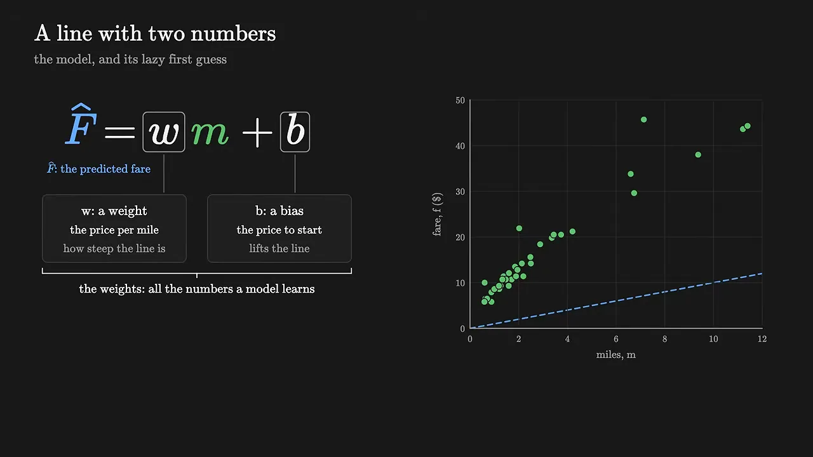
w=1, b=0이에요. 1마일에 1달러, 기본요금 0달러라는 게으른 추측이라 모든 점보다 한참 아래에 있어요.
영상 11:05에서 보기
월요일 정오 승차로 하나만 손으로 계산해요. 화면 왼쪽 아래 식처럼 1 × 1.38 + 0 = 1.38달러예요. 오른쪽 확대창에서 초록 동그라미가 실제 요금 11.40달러이고, 파란 선 위 점이 1.38달러 추측이에요. 빗나간 값(miss)은 '추측 − 실제'로 정의해요. 1.38 − 11.40 = −10.02, 약 10달러 모자라요.
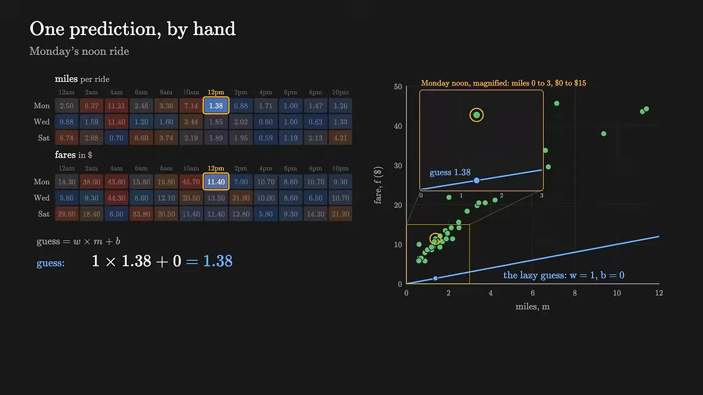
나머지 35건도 같은 한 줄 pred = w * m + b로 한 번에 계산해요. 화면 왼쪽 세로 열이 36개 마일, 가운데 작은 상자 1과 0이 w와 b, 그 오른쪽 파란 열이 36개 예측이에요. 숫자 하나뿐인 w와 b를 모든 승차에 다시 쓰는데, 이걸 브로드캐스팅이라고 해요.
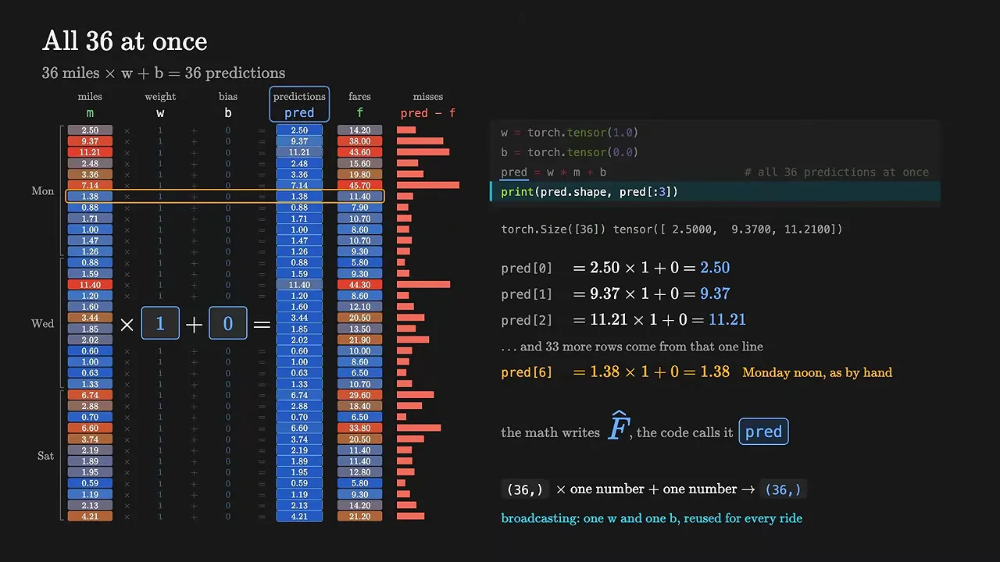
F̂로, 코드는 pred로 불러요. 오른쪽 빨간 막대가 전부 같은 쪽을 향해요. 지금은 모든 추측이 낮아요.
영상 12:05에서 보기
손실: 얼마나 틀렸는지를 숫자 하나로
36개 miss를 숫자 하나로 바꿔야 해요. 그냥 평균 내는 게 먼저 떠오르는 방법이에요. 지금은 모든 점이 직선 위에 있어서 상쇄될 게 없지만, 직선이 점들 사이를 지나기 시작하면 +5와 −5가 서로 지워져요. 나쁜 직선도 평균이 0이 될 수 있어요. 그래서 하나하나 제곱해요. 월요일 정오의 −10.02는 제곱하면 100.40이에요.
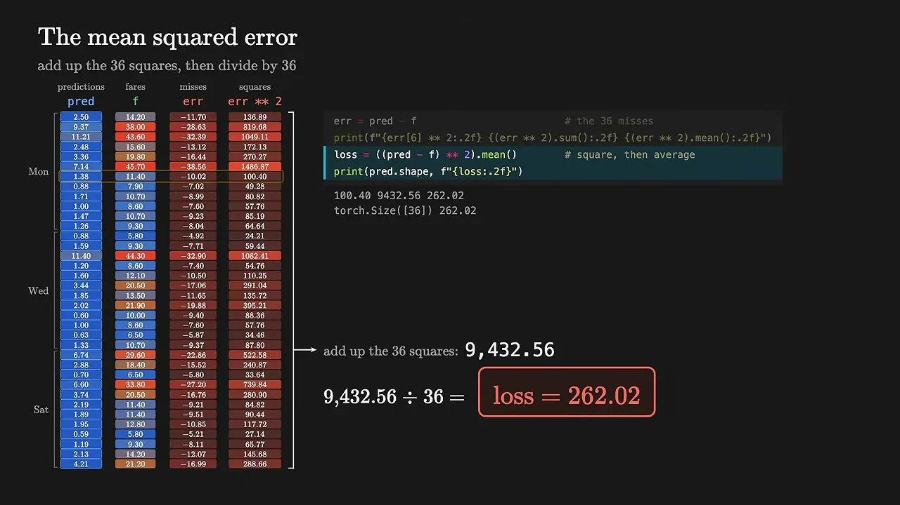
제곱 36개를 더하면 9,432.56이고, 36으로 나누면 262.02예요. 이게 평균제곱오차예요. 두 번째 퀴즈는 제곱의 성질을 물어요. 한 직선은 한 건을 6달러 빗나가고, 다른 직선은 세 건을 2달러씩 빗나가요. 빗나간 총액은 둘 다 6달러지만 손실은 앞쪽이 커요. 6 × 6 = 36이고, 4 + 4 + 4 = 12이기 때문이에요. 제곱은 큰 실수 하나를 작은 실수 여럿보다 훨씬 무겁게 봐요.
손으로 해 보는 경사 하강법
w와 b를 어느 쪽으로 옮겨야 손실이 줄어들까요? 답은 손실의 도함수에 있어요. 가중치마다 하나씩 있는 도함수를 모은 게 그래디언트예요. ∂L/∂w는 b를 고정하고 w만 움직일 때 손실이 얼마나 빨리 변하는지, 즉 w 방향의 손실 기울기예요. 가중치가 둘이니 그래디언트도 숫자 두 개예요.
아래 화면의 두 그래프가 그 뜻이에요. 왼쪽은 b를 0에 두고 w만 바꿀 때의 손실, 오른쪽은 w를 1에 두고 b만 바꿀 때의 손실이에요. 각 그래프의 점이 출발점이고, 그 점에서의 기울기가 그래디언트의 한 칸이에요.
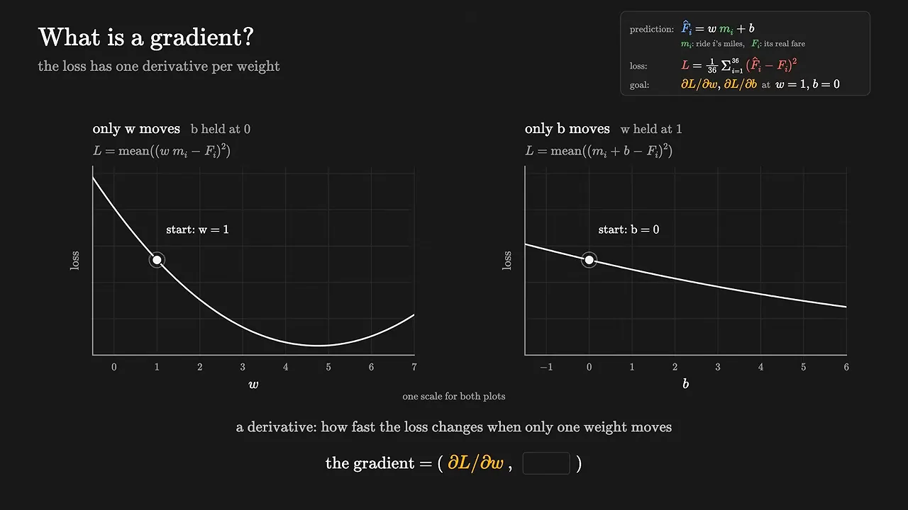
연쇄 법칙으로 두 도함수 구하기
있는 재료는 두 개예요. 예측은 w·m + b이고, 손실은 miss 제곱의 평균이에요. x²의 도함수는 2x니까 miss 제곱 하나의 도함수는 '2 × miss'예요. w를 1 움직이면 예측은 그 승차의 마일만큼, b를 1 움직이면 1만큼 움직여요. 둘을 곱해서 36건 평균을 내면 끝이에요. 이게 연쇄 법칙이고, 영상에 나오는 미적분은 이 한 조각뿐이에요.
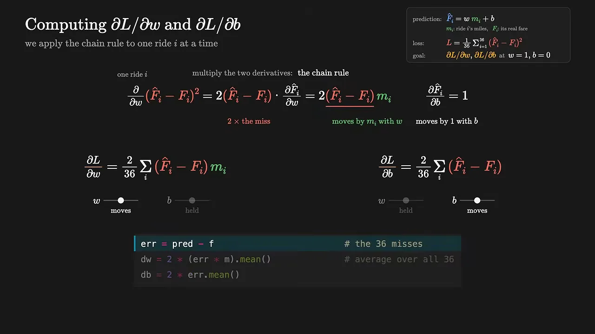
다시 월요일 정오 승차로 손 계산을 해요. w 쪽 항은 2 × (−10.02) × 1.38 = −27.66, b 쪽 항은 마일이 없으니 2 × (−10.02) = −20.04예요. 화면 오른쪽 노란 두 열이 36건 각각의 항이고, 맨 아래가 그 평균이에요.
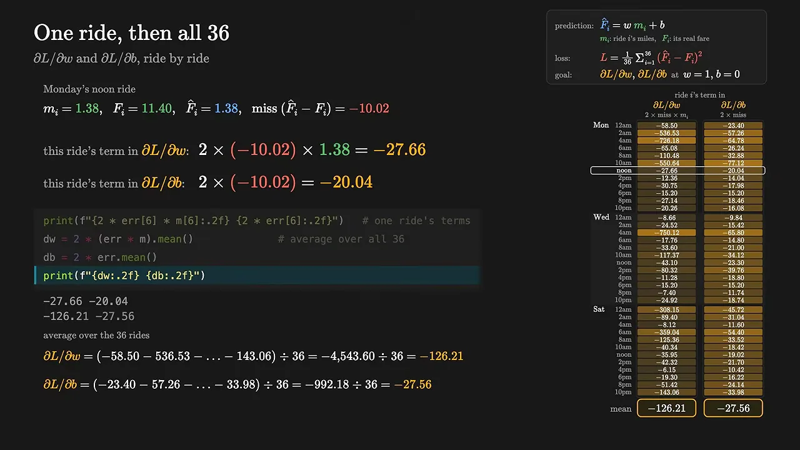
∂L/∂w = −126.21, ∂L/∂b = −27.56이에요.
영상 15:57에서 보기
어느 쪽으로, 얼마나
가중치가 둘뿐이라 손실을 지도로 그릴 수 있어요. 가로가 w, 세로가 b이고, 곡선 하나가 같은 손실 높이예요. 가운데 초록 별이 바닥, 손실이 가장 낮은 곳이에요. 큰 모델은 가중치가 수백만 개라 이런 지도를 못 그려요. 그래서 지도 대신 그래디언트를 따라가요.
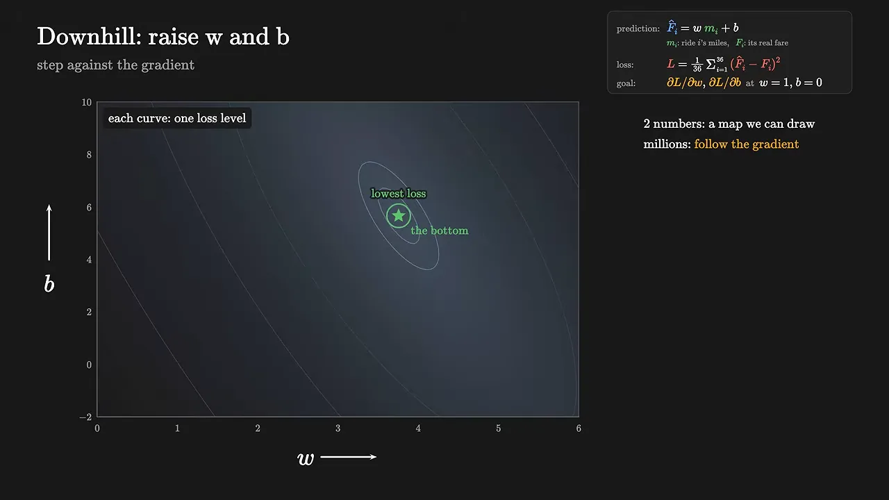
w와 b를 둘 다 올리면 내려가요.
영상 16:17에서 보기
얼마나 움직일지가 남아요. 도함수만큼 통째로 움직이면 w가 1 − (−126.21) = 127.21이 돼요. 화면 가운데 빨간 취소선 줄이 그 실패이고, 오른쪽 그래프 위 빨간 X가 차트 밖으로 날아간 자리예요. 그래서 그래디언트에 작은 학습률 0.01을 곱해요. 그리고 그래디언트의 반대 방향으로 가요.
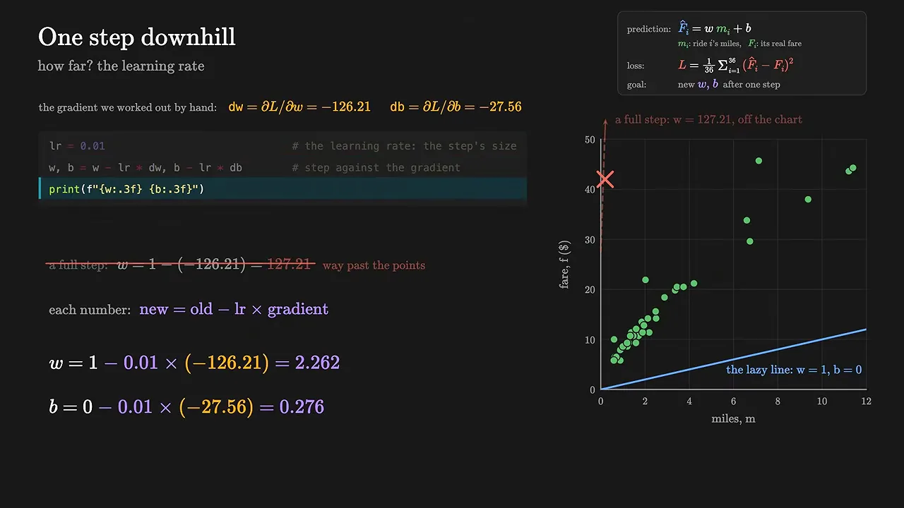
w = 2.262, b = 0.276이 되고 직선이 점들 쪽으로 들려요.
영상 16:57에서 보기
반복하면 생기는 일: b가 기어가요
같은 학습률로 100번 반복해요. 화면 가운데 지도에서 하얀 경로가 출발점에서 오른쪽으로 쭉 뻗었다가 꺾여요. w가 초반에 확 올라가서 바닥을 지나쳐요(w overshoots). 모자란 b를 대신 메우려는 거예요. 오른쪽 아래 막대를 보면 w는 4.106으로 목표 3.76을 넘었고, b는 3.712로 목표 5.66에 한참 못 미쳐요.
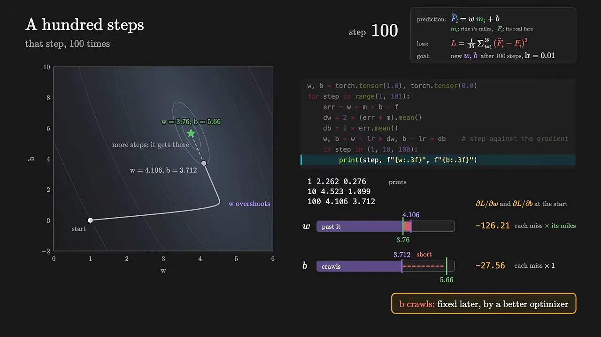
b의 도함수가 작은 이유가 오른쪽에 적혀 있어요. w는 오차를 '마일만큼', b는 '1만큼'만 바꿔요.
영상 18:00에서 보기
b도 결국 도착해요. 스텝이 더 필요할 뿐이고, 영상은 마지막 섹션에서 이 문제를 고치는 옵티마이저를 보여 줘요. 1,000번 돌리면 이렇게 돼요.
| 스텝 | w (마일당) | b (기본) | 손실 |
|---|---|---|---|
| 0 (출발) | 1 | 0 | 262.02 |
| 1 | 2.262 | 0.276 | — |
| 10 | 4.523 | 1.099 | — |
| 100 | 4.106 | 3.712 | — |
| 1,000 | 3.76 | 5.66 | 10.15 |
마일당 3.76달러, 기본 5.66달러예요. 아래 화면 왼쪽 그래프에서 실선이 찾은 직선, 점선이 요금표(마일당 3.50, 기본 3.00)예요. 기울기는 가깝고, 기본요금은 더 높게 나왔어요. 영상은 그 이유 하나를 요금표에서 찾아요. 오른쪽 아래 요금표 캡처에 빨간 밑줄 친 부분이 '느린 교통에서는 60초마다'예요. 막히면 미터기가 시간으로 요금을 매기니, 느린 승차는 마일만으로 계산한 것보다 비싸요.
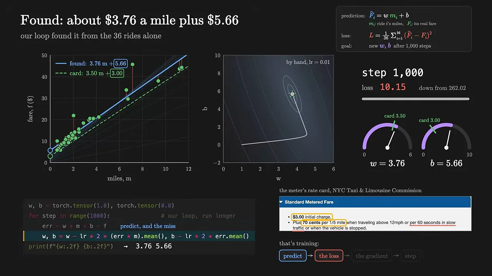
세 번째 퀴즈는 부호를 물어요. 어떤 승차의 예측이 너무 높아서 miss가 양수예요. 이 승차는 w를 어느 쪽으로 밀까요? 답은 '아래'예요. 그 승차의 ∂L/∂w 항은 2 × miss × 마일로 양수이고, 그래디언트의 반대로 가니 w가 내려가요. 출발점에서 w가 올라간 건 모든 승차가 너무 낮아서 항이 전부 음수였기 때문이에요.
Autograd가 기울기를 구하는 방법
손으로는 그래디언트를 구하고 그 반대로 1,000번 걸었어요. 가중치가 백만 개면 이 도함수를 누가 구할까요? 여섯 번째 정류장 Autograd가 그 답이에요.
계산을 기록해 그래프로 만들어요
w와 b를 requires_grad=True로 만들면 PyTorch는 둘에서 출발한 계산을 모두 기록하기 시작해요. 연산 하나가 노드 하나이고, 노드를 이은 기록을 계산 그래프라고 해요. 아래 화면에서 w와 m이 MulBackward0로, 거기에 b가 더해져 AddBackward0로 가요. 이어서 f를 빼고(SubBackward0), 제곱하고(PowBackward0), 평균을 내서(MeanBackward0) 오른쪽 위 손실 262.02에 도착해요.
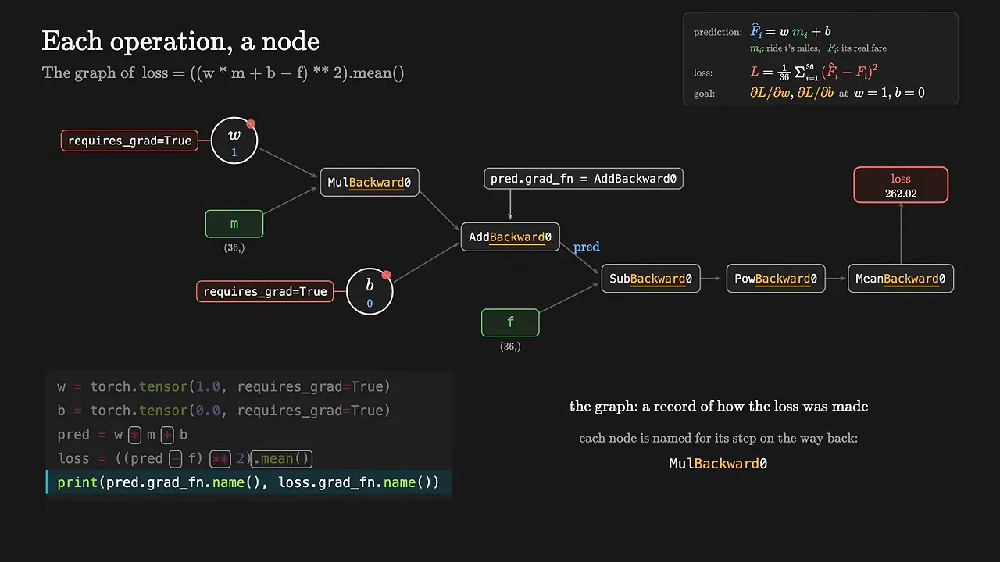
각 결과 텐서의 grad_fn은 자기를 만든 노드를 기억해요. 화면 위 라벨처럼 pred.grad_fn은 AddBackward0예요. loss.backward()는 이 그래프를 손실에서 w, b까지 거꾸로 걸으며 w.grad에 −126.21, b.grad에 −27.56을 채워요. 손으로 구한 값과 똑같아요.
노드마다 국소 도함수를 곱해요
거꾸로 가는 길에 노드마다 자기 몫의 국소 도함수를 곱해요. 평균의 1/36은 잠시 빼고 월요일 정오 승차 하나만 봐요. 화면 그래프 아래 노드마다 × 1/36, × 2 × miss, × 1, × 1, × m = 1.38이 적혀 있어요. 이걸 다 곱하면 w 쪽이 −27.66, b 쪽이 −20.04예요. 앞 섹션에서 손으로 구한 승차 하나의 항과 같아요.
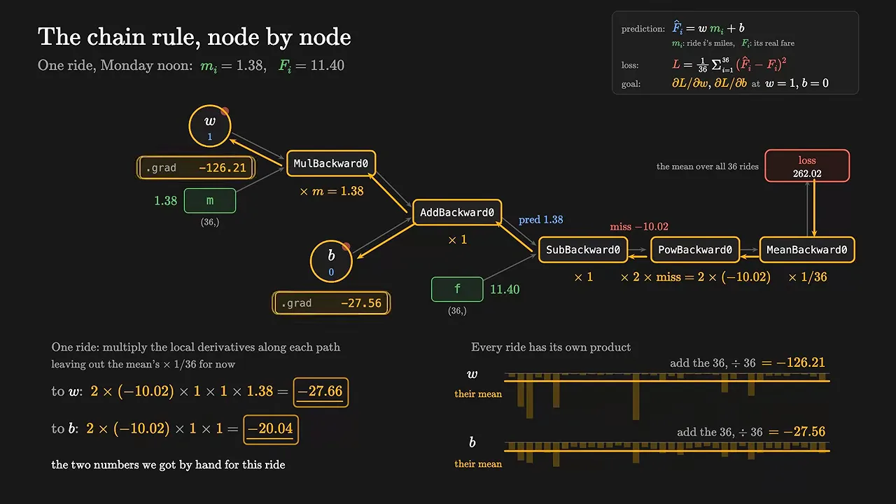
backward()는 더해요
훈련 루프에서는 backward()가 스텝마다 돌아요. 그렇다면 손실을 다시 계산하고 backward()를 한 번 더 부르면, 새 그래디언트가 옛것을 덮어쓸까요, 더해질까요? 화면 가운데 상자가 이 질문(replace? / add?)이에요.
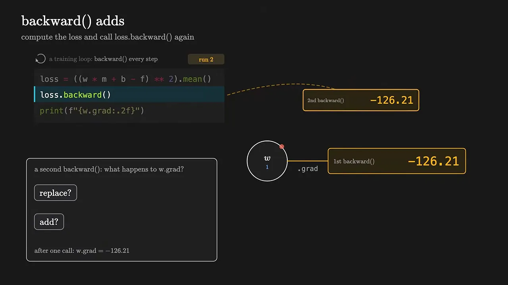
w.grad는 −126.21이 아니라 −252.42예요.
영상 21:15에서 보기
영상은 PyTorch 공식 문서의 Tensor.backward 설명을 그대로 띄워요. 노란 테두리 친 문장이 핵심이에요. 이 함수는 그래디언트를 leaf에 누적하니 .grad를 0으로 만들거나 None으로 둬야 할 수도 있다고 적혀 있어요. leaf는 우리가 직접 만든 w, b 같은 텐서예요.
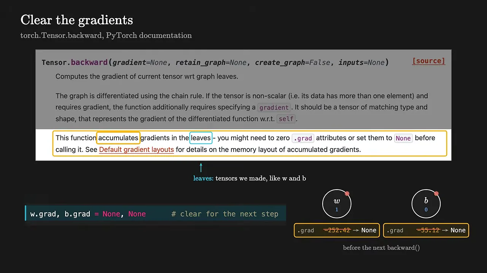
None으로 둬요.
영상 21:45에서 보기
This function accumulates gradients in the leaves - you might need to zero .grad attributes or set them to None before calling it.
이 함수는 그래디언트를 leaf에 누적해요. 호출하기 전에 .grad를 0으로 만들거나 None으로 둬야 할 수 있어요.
— PyTorch 문서, 영상 21:30
업데이트는 기록하지 않아요
규칙이 하나 더 있어요. 업데이트는 모델의 계산이 아니니 그래프에 기록되면 안 돼요. 그냥 업데이트하면 기록 중인 텐서의 숫자를 제자리에서 덮어쓰게 돼서 에러가 나요. 그래서 업데이트는 torch.no_grad() 안에서 해요. 이렇게 짠 Autograd 루프는 '손실 계산 → backward() → no_grad 안에서 가중치 옮기기 → 기울기 비우기' 순서이고, 출력은 손 루프와 숫자 하나 다르지 않아요.
w = torch.tensor(1.0, requires_grad=True)
b = torch.tensor(0.0, requires_grad=True)
for step in range(1, 1001):
loss = ((w * m + b - f) ** 2).mean()
loss.backward() # w.grad, b.grad 채우기
with torch.no_grad(): # 업데이트는 기록하지 않기
w -= lr * w.grad
b -= lr * b.grad
w.grad, b.grad = None, None # 다음 스텝을 위해 비우기다섯 줄로 정리한 루프
마지막 정류장은 torch.optim과 nn.Module로 정리한 루프예요. nn은 neural network의 줄임이에요. 앞의 루프는 아직 가중치를 하나하나 손으로 옮기고 비워요. PyTorch에서 이건 옵티마이저의 일이에요.
torch.optim이 업데이트를 맡아요
가장 단순한 옵티마이저가 torch.optim.SGD, 평범한 경사 하강법이에요. 화면 가운데 하이라이트 줄처럼 가중치 목록과 학습률을 넘겨요. 오른쪽 그림은 backward()가 채운 .grad를 옵티마이저가 가져다 쓴다는 뜻이에요. 보라색 상자로 묶인 부분, 즉 no_grad 안의 업데이트와 비우기가 '옵티마이저의 일(the optimizer's job)'로 넘어가요.
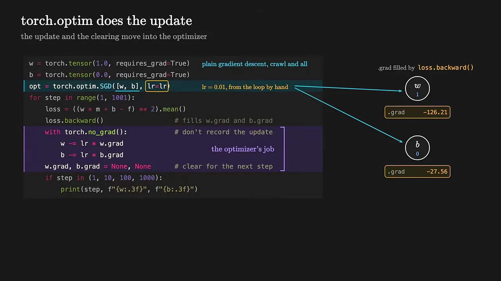
b가 기어가는 것까지 그대로예요.
영상 23:09에서 보기
SGD는 stochastic gradient descent, 확률적 경사 하강법의 줄임이에요. 이름의 '확률적'은 이 섹션 끝에서 나오는 무작위 배치에서 왔어요. opt.step()은 모든 가중치를 옮기고, opt.zero_grad()는 모든 .grad를 비워요.
nn.Module이 가중치를 찾아 줘요
실제 모델은 가중치가 수백만 개라 목록으로 넘길 수가 없어요. 화면 오른쪽 작은 칸 무더기가 그 '수백만 개'이고, 아래 opt = torch.optim.SGD([w, b], lr=lr)가 '지금까지는 하나하나 손으로 넘겼다'는 표시예요. 그래서 PyTorch 모델의 기본 클래스인 nn.Module을 상속해요. 영상의 모델 이름은 FareModel이에요.
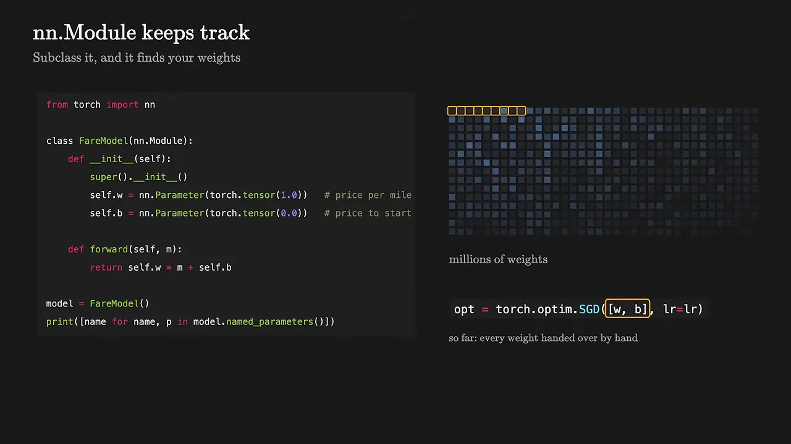
self에 nn.Parameter로 둬요. requires_grad가 이미 켜진 텐서예요.
영상 23:29에서 보기
그러면 model.parameters()가 가중치를 전부 찾아 줘요. forward는 입력이 출력이 되는 방법을 적은 메서드이고, model(m)으로 부르면 돌아요. 마일 36개가 들어가고 예측 36개가 나와요. nn.Module은 안에 중첩된 층 속까지 가중치를 찾아 주는 컨테이너예요. 층은 nn.Linear처럼 자기 가중치를 가진 부품이에요.
아래 화면은 층 두 개를 중첩한 더 큰 모델 TwoLayers예요. first = nn.Linear(1, 4)는 가중치 4개와 편향 4개, second = nn.Linear(4, 1)는 가중치 4개와 편향 1개를 가져요. 노란 칸을 세면 13개이고, 맨 아래 '13 parameters found, by name'이 그 결과예요.
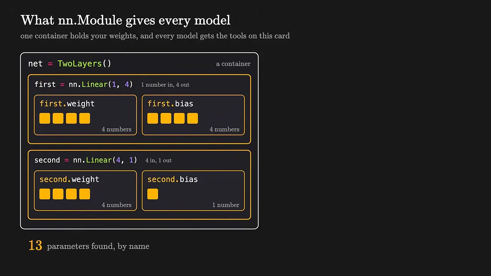
평균제곱오차도 내장돼 있어요. nn.MSELoss()가 손실 함수를 만들고, 예측과 정답(실제 요금)을 넣어 부르면 262.02가 다시 나와요.
다섯 줄이 하는 일
이제 처음의 다섯 줄을 전부 알아요. 영상이 처음에 던진 세 질문의 답을 한 장에 모으면 이래요. 아래 그림의 값은 출발점 w=1, b=0에서 첫 스텝을 돌 때의 숫자예요.
backward()는 .grad만, step()은 가중치만 바꿔요. .grad에 더하기만 하니, 다음 스텝 전에 zero_grad()가 비워 줘야 해요.네 번째 퀴즈가 여기서 나와요. 다섯 줄에서 opt.zero_grad()를 지우면 어떻게 될까요? 답은 '기울기가 쌓여 스텝이 커지고 지나쳐요'예요. 2번째 스텝의 .grad에는 1번째 스텝의 그래디언트가 더해져 있고, 옛 그래디언트는 영영 지워지지 않아요. 옛 그래디언트가 계속 밀어서 w는 다섯 스텝 만에 바닥을 지나 8을 넘어요. 에러는 나지 않아요. PyTorch는 기꺼이 계속 더해요. 가중치가 지워지지도 않아요. zero_grad()는 .grad만 비우기 때문이에요.
손 루프와 다섯 줄을 나란히 놓으면 일이 한 줄씩 맞아떨어져요. 화면 가운데 동그라미 번호가 짝이에요. 오른쪽 열이 PyTorch가 대신해 주는 것, 맨 아래 초록 줄이 결과예요. 둘 다 w=1, b=0에서 출발해 3.76과 5.66에 도착해요.
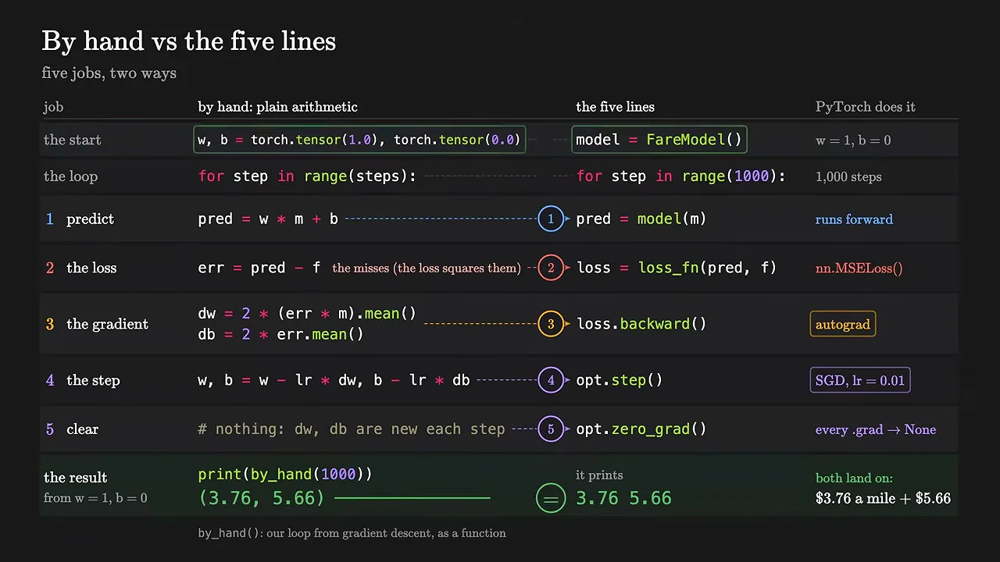
dw, db를 매번 새로 계산하기 때문이에요. 비우기는 backward()가 더하기 때문에 생긴 일이에요.
영상 26:09에서 보기
쓰고, 저장하고, 다시 불러오기
학습한 모델을 쓸 때는 backward()를 부르지 않으니 torch.no_grad()로 기록을 꺼요. 화면 오른쪽 위 상자의 정확한 가중치는 마일당 3.7556, 기본 5.658이에요. 이 값이면 1마일은 약 9.41달러, 5마일은 24.44달러, 10마일은 43.21달러예요. 타기 전에 대략 얼마 나올지 알 수 있어요.
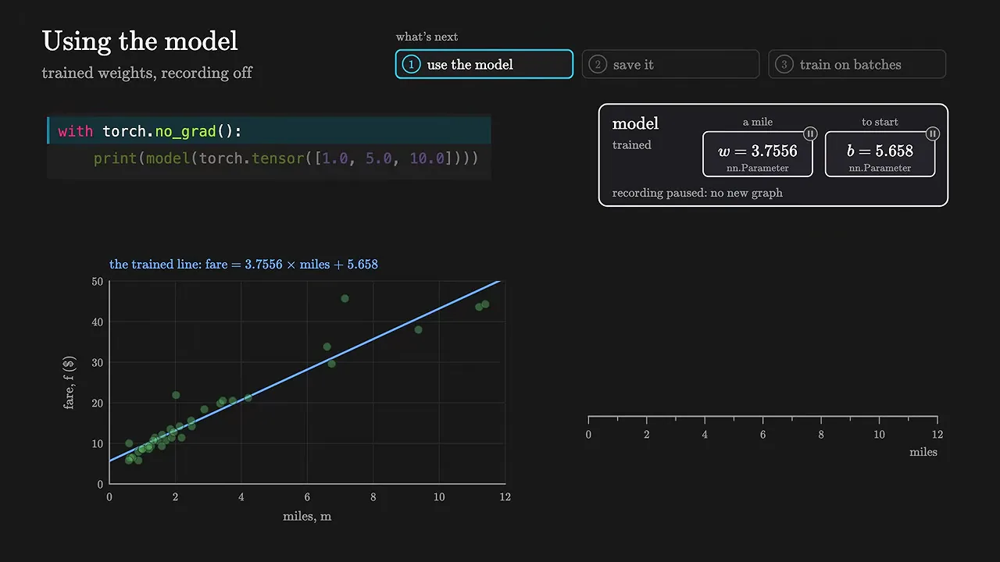
state_dict()는 학습된 가중치를 이름별로 담아요. 화면 오른쪽 표의 'w': 3.7556, 'b': 5.6580이에요. torch.save가 이걸 fare_model.pt 파일로 쓰고, 왼쪽 아래 1과 0에서 출발하는 새 FareModel이 load_state_dict로 다시 불러와요.
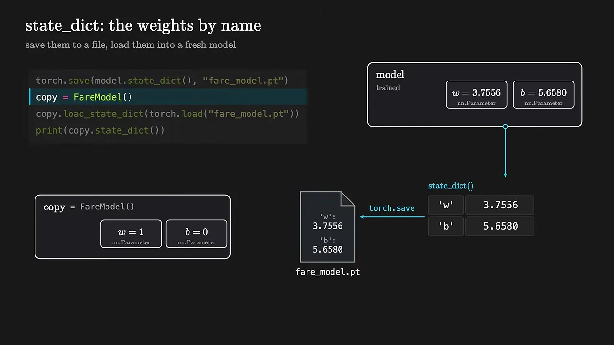
nn.Linear와 모양 에러
사실 우리 모델은 PyTorch에 이미 들어 있어요. nn.Linear(1, 1)은 입력 하나에 가중치를 곱하고 편향을 더하는 층이에요. 숫자 하나가 들어가고 하나가 나와요. 그런데 마일 36개짜리 한 줄을 넣으면 실패해요. 마지막 축을 승차 한 건의 입력으로 읽어서, 입력이 36개인 승차 한 건처럼 보이기 때문이에요. m[:, None]으로 마지막에 새 축을 넣으면 한 줄이 '한 칸짜리 예시 36개'인 열이 돼요.
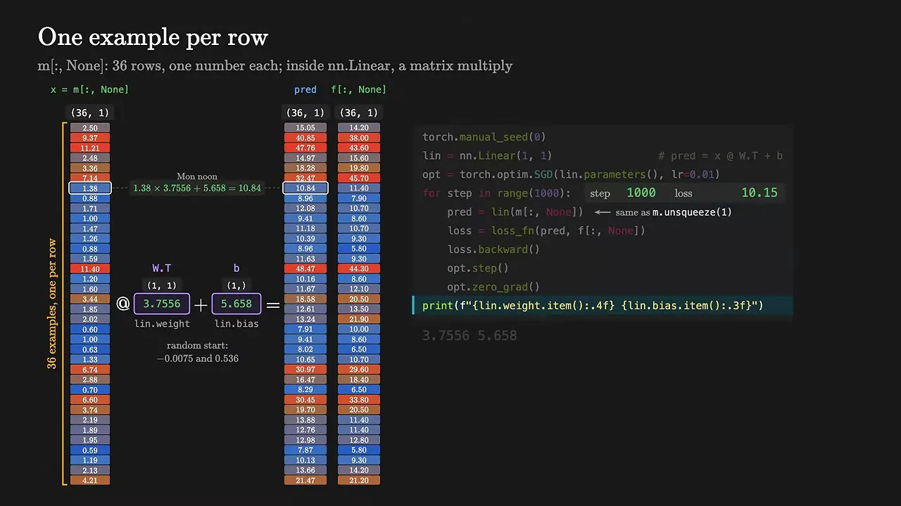
nn.Linear 안은 행렬곱이에요. (36, 1) 열 × (1, 1) 가중치 + 편향이 예측 36개가 돼요. 월요일 정오는 10.84달러로 예측해요.
영상 27:49에서 보기
같은 다섯 줄이 작은 난수 출발점(화면의 −0.0075와 0.536)에서 다시 3.76과 5.66까지 데려가요.
DataLoader와 에폭
데이터가 너무 커서 한 번에 못 쓰면 DataLoader가 섞은 배치로 나눠 줘요. TensorDataset이 승차마다 마일과 요금을 짝지어요. 앞에서 본 stack과 같은 일이에요. 그다음 로더가 36쌍을 12개씩 나눠요. 화면 가운데 batch 1~3 세 열이 그 배치이고, 위 'reshuffled every epoch'처럼 매번 순서가 바뀌어요.
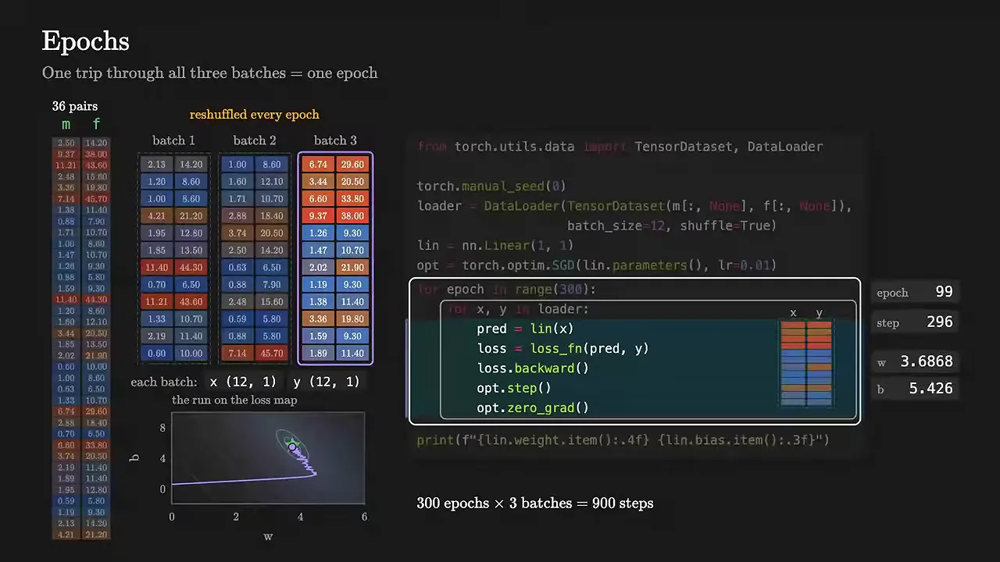
다섯 줄은 배치마다 한 번, 마일 12개 x와 요금 12개 y로 돌아요. 300 에폭이면 900 스텝이고, 결과는 3.75와 5.69 근처예요. 이 무작위 배치가 확률적 경사 하강법의 '확률적'이에요.
바꿔 끼울 수 있는 것: 옵티마이저, 활성화, 손실
다섯 줄 루프에서 메뉴처럼 골라 바꿀 수 있는 부분이 셋 있어요. 옵티마이저, 모델, 손실이에요. 영상은 이 셋을 빠르게 훑어요.
옵티마이저: b가 기어가는 문제를 고쳐요
지금 학습률에서 평범한 SGD는 b가 기어가는 탓에 551스텝이 걸려요. 모멘텀은 최근 스텝의 속도를 이어 받고 오래된 것은 흐려지게 둬요. 그래서 b의 작은 밀기가 쌓여 속도가 붙고, 100스텝이면 돼요. Adam은 가중치마다 따로 보폭을 정해요. b의 작은 도함수도 제 크기의 한 걸음을 얻어서 88스텝이면 돼요.
아래 화면은 같은 손실 지도 위에서 여덟 가지 옵티마이저가 첫 300스텝 동안 간 길이에요. 각 칸 왼쪽 아래 동그라미가 출발점 w=1, b=0, 가운데 별이 최저점이에요. 오른쪽 위 배지는 w와 b가 정답 근처(맨 위 조건)에 들어올 때까지 걸린 스텝 수예요. 학습률은 옵티마이저마다 따로 맞춘 값이에요.
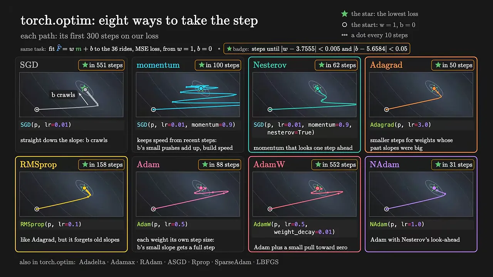
| 옵티마이저 | 화면의 설정 | 스텝 수 | 화면의 한 줄 설명 |
|---|---|---|---|
| SGD | lr=0.01 | 551 | 경사를 곧장 내려가요. b가 기어가요 |
| momentum | SGD(lr=0.01, momentum=0.9) | 100 | 최근 스텝의 속도를 유지해요 |
| Nesterov | SGD(..., nesterov=True) | 62 | 한 걸음 앞을 보는 모멘텀 |
| Adagrad | lr=3.0 | 50 | 지난 기울기가 컸던 가중치는 보폭을 줄여요 |
| RMSprop | lr=0.1 | 158 | Adagrad와 비슷하지만 옛 기울기를 잊어요 |
| Adam | lr=0.5 | 88 | 가중치마다 자기 보폭. b도 제 크기의 걸음을 얻어요 |
| AdamW | lr=0.5, weight_decay=0.01 | 552 | Adam에 0 쪽으로 살짝 당기는 힘을 더해요 |
| NAdam | lr=1.0 | 31 | Nesterov식으로 앞을 보는 Adam |
바꾸는 건 opt = ... 한 줄이고 루프는 그대로예요.
모델: 활성화 함수로 선을 꺾어요
선형 층은 직선만 만들어요. 그런데 어떤 데이터는 굽어 있어요. 시간대별 택시 속도가 그래요. 밤에는 빠르고 한낮에는 느려요. 층 사이의 모든 숫자에 작은 함수, 즉 활성화 함수를 하나 끼우면 선이 꺾일 수 있어요. 활성화 없이 선형 층 두 개를 이어 붙이면 여전히 직선이에요.
아래 화면 왼쪽이 다섯 가지 활성화 함수, 오른쪽이 실험이에요. 운행 기록에서 2시간 칸마다 평균 속도를 구하고, 시간대를 넣으면 사흘의 속도를 내는 모델을 맞춰요. 오른쪽 아래 세 줄이 비교한 모델이에요. nn.Linear(1, 3) 하나, Linear 둘을 그냥 이은 것, 그리고 가운데 nn.ReLU()를 끼운 것이에요.
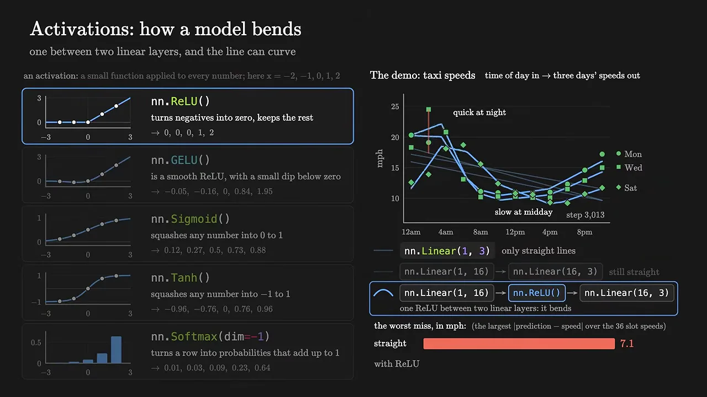
| 활성화 | 하는 일 | x = −2, −1, 0, 1, 2일 때 |
|---|---|---|
nn.ReLU() | 음수를 0으로, 나머지는 그대로 | 0, 0, 0, 1, 2 |
nn.GELU() | 부드러운 ReLU. 0 아래로 살짝 내려가요 | −0.05, −0.16, 0, 0.84, 1.95 |
nn.Sigmoid() | 모든 수를 0과 1 사이로 눌러요 | 0.12, 0.27, 0.5, 0.73, 0.88 |
nn.Tanh() | −1과 1 사이로 눌러요 | −0.96, −0.76, 0, 0.76, 0.96 |
nn.Softmax(dim=-1) | 한 줄을 합이 1인 확률로 바꿔요 | 0.01, 0.03, 0.09, 0.23, 0.64 |
손실: 무엇을 예측하느냐로 골라요
손실도 고를 수 있어요. 숫자를 맞힐 땐 평균제곱오차(MSE(Mean Squared Error))를 써요. 큰 실수에 가산점을 주기 싫으면 L1, 둘을 섞은 게 Huber예요. 범주를 고를 땐 교차 엔트로피, 예·아니오에는 이진 교차 엔트로피를 써요.
아래 화면 왼쪽 세 칸이 숫자용 손실이에요. 학습한 직선은 월요일 정오를 −0.56, 월요일 오전 10시를 −13.23 빗나가요. 화면 맨 위 줄의 예측 [10.84, 32.47]과 정답 [11.40, 45.70]의 차이예요. 각 칸의 그래프에서 흰 점 두 개가 이 두 승차의 위치예요.
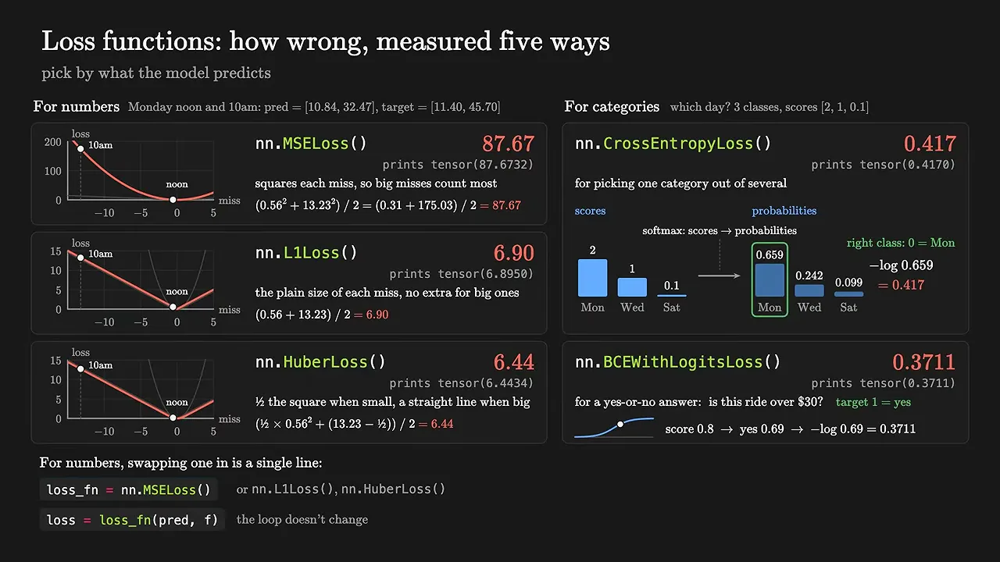
| 손실 | 정오 (−0.56) | 10시 (−13.23) | 두 건 평균 |
|---|---|---|---|
nn.MSELoss() — 제곱 | 0.31 | 175.03 | 87.67 |
nn.L1Loss() — 크기 그대로 | 0.56 | 13.23 | 6.90 |
nn.HuberLoss() — 작으면 제곱의 절반, 크면 크기 − ½ | 0.16 | 12.73 | 6.44 |
화면 오른쪽은 범주용 손실이에요. 교차 엔트로피 칸은 '어느 요일 승차인가' 문제를 꾸며서 점수 [2, 1, 0.1]을 softmax로 확률 0.659, 0.242, 0.099로 바꿔요. 정답(월요일)의 확률에 −log를 씌운 0.417이 손실이에요. 이진 교차 엔트로피 칸은 '이 승차가 30달러를 넘나'라는 예·아니오 문제로 0.3711을 내요. 숫자용 손실은 한 줄로 바꿔 끼우고, 루프는 바뀌지 않아요.
전체 그림
영상은 처음에 약속한 보드 한 장으로 끝나요. 위 두 줄의 여섯 칸이 텐서, 텐서 연산, 예측, 손실 함수, 경사 하강법, Autograd이고, 아래 넓은 칸이 전문가의 루프예요. 아래 표의 왼쪽 열은 손으로 쓴 코드, 가운데 열은 다섯 줄, 오른쪽 열은 PyTorch가 대신해 주는 일이에요.
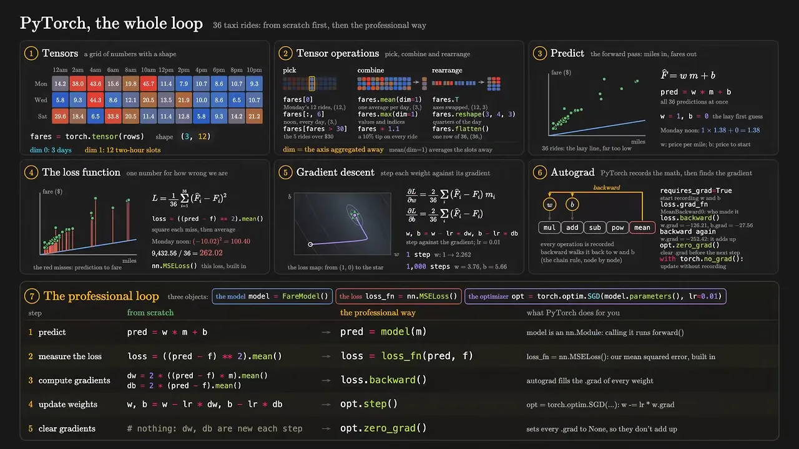